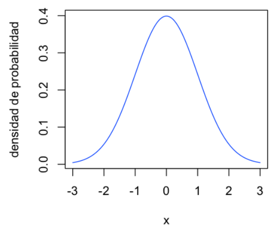
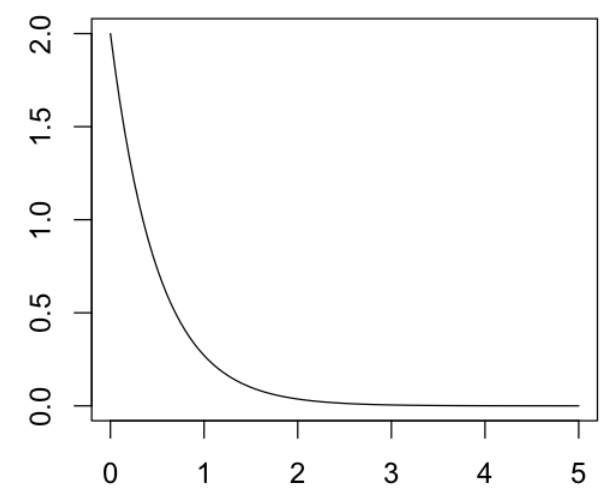
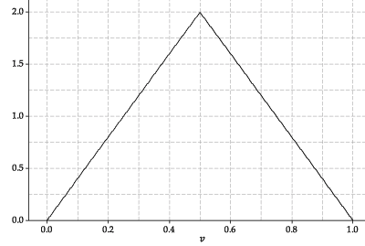

2. Variables Aleatorias#
2.1. Variables aleatorias discretas y continuas#
Una variable aleatoria (v.a.) \(X\) es una función que asigna un número a cada elemento \(\omega\) en el espacio muestral de un experimento aleatorio.
{kind=link}
Se denomina variable aleatoria discreta si los valores son enteros:
\(\begin{array}{cc} X:& \Omega \to \mathbb{Z} \end{array}\)
Nota: El codominio of X (todos los valores de salida de la función) también puede ser un conjunto finito que podría ponerse en una correspondencia uno a uno con los enteros en lugar de los enteros \(\mathbb{Z}\) direcetamente.
Ejemplo:
\(\begin{array}{ll} X:& \Omega \to \{0,1\}\\ &\omega \to X(\omega)= \left\{\begin{array}{ll} 1 & \omega=cara\\ 0 & \omega=sello \\ \end{array} \right . \end{array}\)
¿Cómo es el mapeo (o la asignación) de una variable aleatoria continua?
\(\begin{array}{cc} X:& \Omega \to \mathbb{R} \end{array}\)
Ejemplo:
\(\begin{array}{ll} X:& \Omega \to [0,\infty) \\ &\omega \to X(\omega)= t \\ \end{array}\)
donde \(t\) es el tiempo de falla de una máquina.
Así que decimos que tenemos dos tipos de v.a. (o datos):
Discreto
Continuo
En la práctica de la ciencia de datos, también vemos la clasificación de los tipos de datos de la siguiente manera:
Categórico (o categórico nominal, nominal, cualitativo): e.g., sexo
Caso especial: binario
Ordinal (o categórico ordinal, categórico ordenado): e.g., nivel de educación
Continuo
Nota
Una variable categórico u ordinal puede convertirse a varias variables discretas (binarias) o una variable discreta. Hay que tener cuidado de que las diferencias entre las categorías puedan reflejarse correctamente en las diferencias entre los números.
2.2. Función de probabilidad puntual (masa de probabilidad)#
En el caso de variables aleatorias discretas, la probabilidades se definen mediante una función de probabilidad puntual, o función de masa de probabilidad:
\(f_X: \mathbb{Z} \to [0, 1]\)
Aquí, el subíndice \(X\) es para indicar que \(f\) es la función masa de probabilidad de \(X\). Pero se puede omitir cuando el contexto es claro. Vamos a omitirlo desde ahora para simplificar las notaciones. Así que escribimos:
\(f: \mathbb{Z} \to [0, 1]\)
\(f(x) = P(X = x)\)
Recuerda que \(X\) es una función, no un número.
\(f(x)\) representa una probabilidad. ¿Qué propiedades tiene \(f(x)\)?
Según las propiedades de probabilidad:
\(\forall x \in \mathbb{Z}, f(x) \geq 0\)
\(\sum_{x} f(x) = 1\)
Ejemplo
¿Cómo podemos modelar el número de estudiantes que llegan al espacio de posgrado el lunes entre 9 y 10 am?
Utilizaremo la distribución de Poisson:
\(f(x) = \frac{e^{-10}10^x}{x!} \text{ (x = 0, 1, 2 ...)}\)
dónde x representa el número de estudiantes que llegan al espacio de posgrado el lunes entre 9 y 10 am. Preguntamos:
\(P(X=10) = f(10) = ?\)
options(repr.plot.width=5, repr.plot.height=5)
vec <- seq(0, 30, 1)
pvec <- dpois(vec, 10)
# ## Si usamos la función incorporada en R
par(cex=1.2) #configura tamaño de fuente
plot(vec, pvec, type="h", main="Funcion de masa de probabilidad\n de Poisson (media=10)", xlab="x", ylab="probabilidad")
points(vec, pvec)
## Si usamos rbokeh:
# library(rbokeh)
# p <- figure(plot_width=600,plot_height=300, title="Ejemplo función de masa de probabilidad de Poisson (media=10)", title_location="above") %>%
# ly_points(vec,pvec, hover = list(vec,pvec))%>%
# ly_segments(vec,rep(0,30),vec,pvec)
# p
2.3. Función de densidad de probabilidad#
En el caso de variables aleatorias continuas, las probabilidades se definen mediante una función de densidad de probabilidad (fdp) o simplemente función de densidad de \(X\):
¿Cómo es el mapeo (o la asignación) para la función de densidad?
\( f: \mathbb{R} \to \mathbb{R} \text{ (no es [0, 1])}\)
Advertencia
Tiene dos “cosas extrañas”!
\(f(x)\) no es una probabilidad! \(f(x)\) podría ser mayor que 1, y tiene la restricción de que el área bajo la curva \(f(x)\) es 1. Describe qué tan relativamente posible es que una variable aleatoria continua tome un valor específico en comparación con otros valores (relative likelihood).
\(P(X = x) = 0\). Es decir, la probabilidad de que una variable aleatoria continua tome cualquier valor específico es 0 (absolute likelihood). Para obtener una probabilidad significativa para una variable aleatoria continua, calculamos el área bajo la curva fdp para un rango de x.
Aquí está un ejemplo de normal estándar:
{kind=link}
La probabilidad de que \(X\) tome un valor entre \(a\) y \(b\) es igual al área sombreada bajo la función de densidad entre las ordenadas en \(x = a\) y \(x = b\). ¿Cómo calcular este área?
Cálculo integral: \(P(a < X < b) = \int_{a}^{b} f(x) dx\)
¿Qué propiedades tiene \(f(x)\)?
Según las propiedades de probabilidad:
\(\forall x \in \mathbb{R}, f(x) \geq 0\)
\(\int_{-\infty}^\infty f(x)dx = 1\) (El área bajo la curva fdp limitada por el eje x sea igual a 1.)
¿Las siguientes son funciones de densidad?
 {kind=link}
{kind=link}
(Fuente)
Ejemplo
¿Cómo podemos modelar el peso de un individuo?
\(f(x) = \frac{1}{2\sqrt{2\pi}} exp(\frac{-(x-60)^2}{8})\)
dónde x representa el peso (kg) de un individuo. Preguntamos:
\(P(58 < X < 62) = \int_{58}^{62} f(x) dx = ? \)
## Caso Normal con media 60 y desviación estándar (sd) 2
options(repr.plot.width=3.5, repr.plot.height=3.5)
par(cex=1)
vec <- seq(50, 70, by=0.1)
pvec <- dnorm(vec, 60, 2)
## Si usamos ggplot2
library(ggplot2)
df <- data.frame(vec, pvec)
ggplot(data=df, aes(x=vec, y=pvec)) +
geom_line() +
geom_area(data=subset(df, vec>58 & vec<62), fill="grey") + #área sombreada
ggtitle("Densidad Normal") +
labs(x="x", y="densidad de probabilidad") +
theme(text=element_text(size=16))
## Si usamos rbokeh
# vec2 <- seq(58,62,by=0.1)
# library(rbokeh)
# p <- figure(plot_width=600,plot_height=300, title="Ejemplo densidad Normal", title_location="above") %>%
# ly_lines(vec,pvec) %>%
# ly_abline( h=0) %>%
# ly_polygons( x = c(58,vec2,62), y =c(0,dnorm(vec2,60,2),0), col = "grey")
# p
2.4. Función de distribución de probabilidad acumulada (distribución acumulativa)#
La función de distribución de probabilidad acumulada o función de distribución acumulativa (o simplemente función de distribución) es la función que devuelve la probabilidad de que una v.a. sea menor o igual que un valor.
En el caso de las v.a. discretas se calcula como:
\( F(x) = P(X \leq x) = \sum_{t \leq x} \limits P(X = t) =\sum_{t \leq x} \limits f(t)\)
En el caso de las v.a. continuas se calcula como:
\(F(x) = P(X \leq x) = \int_{-\infty}^x f(t)dt \)
¿Cuál es la relación entre F(x) y f(x)?
Como una consecuencia inmediata de la definición arriba, se pueden obtener:
\(f(x) = \frac{d}{dx}F(x) \)
##distribución Poisson acumulada
options(repr.plot.width=5, repr.plot.height=5)
vec <- seq(1, 30, by=1)
pvec <- ppois(vec, 10)
## Si usamos la función incorporada en R
par(cex=1.2) #configura tamaño de fuente
plot(vec, pvec, type="h", main="Prob. Acumulada (Discreto)", xlab="x", ylab="probabilidad")
points(vec, pvec)
## Si usamos rbokeh
# library(rbokeh)
# p1 <- figure(plot_width=600,plot_height=200, title="Prob. Acumulada: Caso Discreto", title_location="above") %>%
# ly_points(vec,pvec, hover = list(vec,pvec))%>%
# ly_segments(vec,rep(0,30),vec,pvec)
# p1
##distribución normal acumulada
options(repr.plot.width=4.5, repr.plot.height=4.5)
vec <- seq(40, 80, by=0.1)
pvec1 <- pnorm(vec, 60, 2)
pvec2 <- pnorm(vec, 60, 4)
pvec3 <- pnorm(vec, 60, 8)
## Si usamos la función incorporada en R
par(cex=1.2) #configura tamaño de fuente
plot(vec, pvec1, type="l", col="black", main="Prob. Acumulada (Continuo)", xlab="x", ylab="densidad de probabilidad")
lines(vec, pvec2, col="blue")
lines(vec, pvec3, col="red")
legend(x="bottomright", lty=1, legend=c("s=2", "s=4", "s=8"), col=c("black", "blue", "red"), text.width=4)
## Si usamos rbokeh
# p2 <- figure(plot_width=600,plot_height=200, title="Prob. Acumulada: Caso Continuo", title_location="above", legend_location = "bottom_right") %>%
# ly_lines(vec,pvec1,legend="sd=2") %>%
# ly_lines(vec,pvec2,col="blue",legend="sd=4") %>%
# ly_lines(vec,pvec3,col="red",legend="sd=8")
# p2
Ahora, podemos usar F(x) para obtener la probabilidad!
\(P(a \leq X \leq b) = F(b) - F(a)\)
Para la pregunta anterior sobre el peso:
## Calculamos la probabilidad (entre 58 y 62)
pnorm(62,60,2)-pnorm(58,60,2)
2.5. Variables Aleatorias Multidimensionales#
Se trata de funciones que asignan un vector multidimensional al resultado de un experimento aleatorio. Se denomina Vector Aleatorio Discreto si los valores son enteros multidimensionales:
\(\begin{array}{cl} {\bf X}:& \Omega \to \mathbb Z^k\\ &\omega \to {\bf X}(\omega)=(X_1(\omega),\cdots,X_k(\omega)) = (n_1,\cdots,n_k)\\ f: &\mathbb Z^k \to [0, 1] \end{array}\)
y Vector Aleatorio Continuo si los valores son reales multidimensionales:
\(\begin{array}{cl} {\bf X}:& \Omega \to \mathbb R^k\\ &\omega \to {\bf X}(\omega)=(X_1(\omega),\cdots,X_k(\omega)) = (x_1,\cdots,x_k)\\ f: &\mathbb R^k \to \mathbb{R} \end{array}\)
Ejemplo (caso específico de la distribución exponencial bivariada)
Aquí es un ejemplo de un caso especifico de la distribución exponencial bivariada (cuando los dos variables aleatorias continuas son independentes).
Sea
\(\begin{array}{cl} (X,Y):&\Omega \to \mathbb R^2\\ &\omega \to (X(\omega),Y(\omega))=(x,y)\\ \end{array}\)
tal que su densidad de probabilidad es:
\(f(x,y) = ab e^{-(ax+by)} \qquad a,b>0, \qquad x,y\geq0\)
y entonces la distribución acumulativa queda:
\(F(x,y)= \int_0^x \int_0^y f(t,s)dsdt = (1- e^{-ax})(1- e^{-by})\)
Notar que
\(\lim_{x,y \to \infty} F(x,y) = 1\)
options(repr.plot.width=10, repr.plot.height=5)
par(mfrow=c(1, 2), cex=1.1)
x <- seq(0, 3, by=0.1)
y <- seq(0, 3, by=0.1)
a = 5
b = 1
dens <- function(x,y) a*b*exp(-a*x -b*y)
z = outer(x, y, dens)
persp(x, y, z, ticktype="detailed", zlab="f(x,y)", main="Densidad de Prob.: Caso a=5 y b=1")
acum <- function(x,y) (1 - exp(-a*x)) * (1 - exp(-b*y))
z = outer(x, y, acum)
persp(x, y, z, ticktype="detailed", zlab="F(x,y)", main="Distribucion acumulativa: Caso a=5 y b=1")
2.6. Distribución conjunta y independencia estadística#
2.6.1. Distribución conjunta#
La función arriba \(f(x, y)\) para las ocurrencias simultáneas de las v.a. \(X\) y \(Y\) es una distribución conjunta.
Definición (caso discreto): La función \(f_{X,Y}(x,y)\) es una distribución de probabilidad conjunta de las v.a. discretas \(X\) y \(Y\), si
\(f_{X,Y}(x, y) \geq 0\) para toda \((x, y)\)
\(\sum_x \sum_y f_{X,Y}(x, y) = 1\)
\(f_{X,Y}(x,y) = P(X=x,Y=y)\)
\(P[ (X, Y) \in A] = \sum_x \sum_y f_{X,Y}( x,y )\), para cualquier región \(A\) en el plano \(xy\)
Definición (caso continuo): La función \(f_{X,Y}(x,y)\) es una función de densidad conjunta de las v.a. continuas \(X\) y \(Y\), si
\(f_{X,Y}(x, y) \geq 0\) para toda \((x, y)\)
\(\int_x \int_y f_{X,Y}(x, y) dx dy = 1\)
\(P[ (X, Y) \in A] = \int\int_A f_{X,Y}( x,y ) dx dy\), para cualquier región \(A\) en el plano \(xy\)
Nota
Aquí, el subíndice \(X,Y\) en \(f_{X,Y}\) es para indicar que la función es para v.a. \(X\) y \(Y\). Pero se puede omitir cuando el contexto es claro. Esto es el caso para los subindices abajo también.
2.6.2. Distribución marginal#
Definición: Las distribuciones marginales sólo de \(X\) y sólo de \(Y\) son
\(f_X(x) = \sum_y f_{X, Y}(x, y)\), \(f_Y(y) = \sum_x f_{X, Y}(x, y) \quad\) para el caso discreto, y
\(f_X(x) = \int_y f_{X, Y}(x, y) dx dy\), \(f_Y(y) = \int_x f_{X, Y}(x, y) dxdy \quad\) para el caso continuo.
2.6.3. Distribución condicional#
Definición: Sean \(X\) y \(Y\) dos v.a., discretas o continuas. La distribución condicional de la v.a. \(Y\), dado que \(X = x\), es
\(f_{Y|X}(y|x) = \frac{f_{X, Y}(x, y)}{f_X(x)} \quad\) siempre que \(f_X(x) > 0\).
De manera similar, la distribución condicional de la v.a. \(X\), dado que \(Y = y\), es
\(f_{X|Y}(x|y) = \frac{f_{X, Y}(x, y)}{f_Y(y)} \quad\) siempre que \(f_Y(y) > 0\).
También, podemos deducir que \(f_{X, Y}(x, y) = f_X(x)f_{Y|X}(y|x) = f_Y(y) f_{X|Y}(x|y)\).
2.6.4. Independencia estadística#
Definición: Sean \(X\) y \(Y\) dos v.a., discretas o continuas, con distribución de probabilidad conjunta \(f_{X, Y}(x, y)\) y distribuciones marginales \(f_X(x)\) y \(f_Y(y)\), respectivamente. Se dice que las v.a. \(X\) y \(Y\) son estadísticamente independientes si y sólo si
\(f_{X, Y}(x, y) = f_X(x) f_Y(y)\)
para todos los pares \((x,y)\) dentro de sus rangos.
2.7. Regla de Bayes#
En su formulación con variables aleatorias, la regla de Bayes queda:
\(\begin{array}{lll} P(y \mid x)& = & \frac{P(x \mid y) P(y)}{P(x)} \,= \, \frac{P(x \mid y) P(y)}{\sum_y P(x\mid y) P(y)}\\ \end{array}\)
Aquí, \(P(y \mid x)\) es una forma simplifica para escribir \(P(Y = y \mid X = x)\). \(P(x)\) es una forma simplifica para escribir \(P(X = x)\).